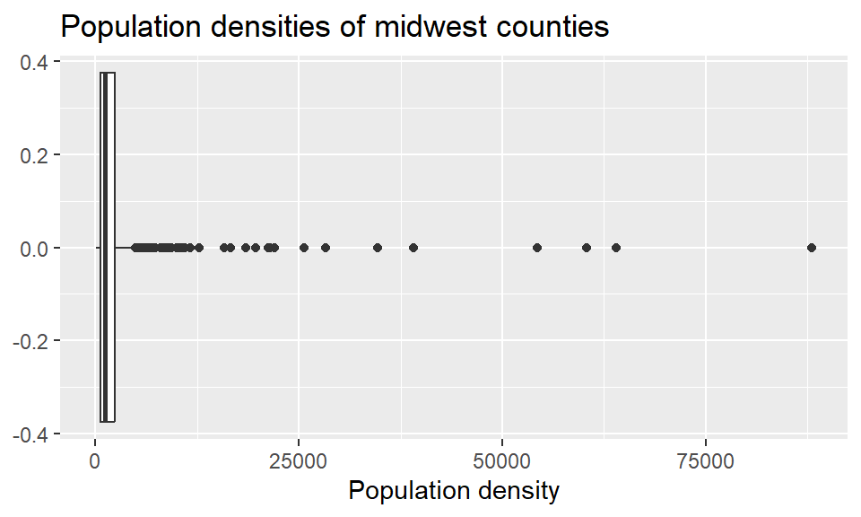
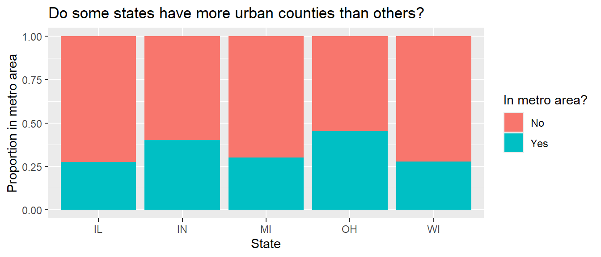
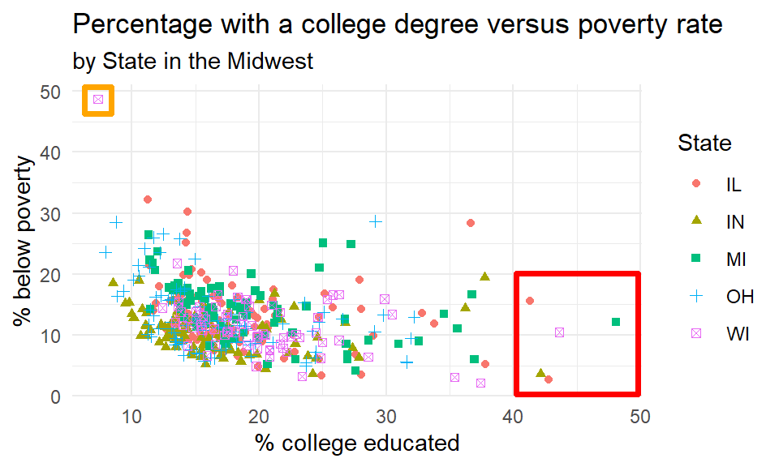

library(tidyverse)Lab 2
Revisiting the Midwest
Lab
Learning objectives
By the end of the lab, you will…
- Be able to create transform data using
dplyr - Build on your mastery of data visualizations using
ggplot2 - Get more experience with data science workflow using R, RStudio, Git, and GitHub
- Further your reproducible authoring skills with Quarto
- Improve your familiarity with version control using Git and GitHub
Getting started
Step 1: Login to Posit Cloud
- Go to https://posit.cloud and go to our course workspace.
Step 2: Clone the repo & start new RStudio project
Go to the GitHub course organization and click on the repo with the prefix lab-2. It contains the starter documents you need to complete the lab.
Click on the green CODE button and select HTTPS (it should already be selected by default). Click on the clipboard icon to copy the repo URL.
In RStudio, go to New Project ➛ New Project from Git Repository ➛ Git
Paste the URL of your assignment repo into the dialog box URL of your Git Repository.
Click OK. The repo will be cloned and an RStudio project will be created.
Go to the Files pane and click lab-2.qmd to open the template Quarto file. This is where you will write up your code and narrative for the lab.
Important
Your repo also contains a tests/ folder. Do not move, rename, edit, or delete it. The template uses it to give you instant feedback on your answers (see “Checking your work” below).
Step 3: Update the YAML
In lab-2.qmd, update the author field to your name, render your document, and examine the changes. Then, in the Git pane, stage your changes, add a commit message (e.g., “Added author name”), and click Commit. Then, push the changes to your GitHub repository and, in your browser, confirm that these changes have indeed propagated to your repository.
Important
If you encounter any issues with the above steps, ask for help before proceeding.
Packages
In this lab, we will work with the tidyverse package, a collection of packages for performing data analysis in a “tidy” way.
- Run the code cell by clicking on the green triangle (play) button for the code cell labeled
load-packages. This loads the package so that its features (the functions and datasets in it) are accessible from your Console. - Then, render the document that loads this package to make its features (the functions and datasets in it) available for other code cells in your Quarto document.
Checking your work
This lab is partially autograded. That changes two things about how you work:
Answers go into named objects. Each question tells you exactly what to name your answer (e.g., “save the result as a data frame named
county_counts”). The template already contains a placeholder likecounty_counts <- NULLin each answer cell – replace theNULL(orNA) with your code, but do not change the object names. The autograder looks for these exact names; an answer stored under a different name receives no credit, even if the code is correct.You can check your answers as you go. After each question, the template contains a check chunk that runs
ottr::check()on that question. Run it to see the results of the public checks: quick tests that confirm your answer has the right structure (correct type, columns, dimensions) and is in a plausible range. These checks are designed to tell you whether you’re on the right track without revealing the answer.
Guidelines
As we’ve discussed in the lecture, your plots should include an informative title, axes and legends should have human-readable labels and aesthetic choices should be carefully considered.
Additionally, code should follow the tidyverse style. Particularly,
there should be spaces before and line breaks after each
+when building aggplot,there should also be spaces before and line breaks after each
|>in a data transformation pipeline,code should be properly indented,
there should be spaces around
=signs and spaces after commas.
Furthermore, all code should be visible in the PDF output, i.e., should not run off the page on the PDF. Long lines that run off the page should be split across multiple lines with line breaks.1
As you complete the lab and other assignments in this course, remember to develop a sound workflow for reproducible data analysis. This assignment will periodically remind you to render, commit, and push your changes to GitHub.
Important
You should have at least 3 commits with meaningful commit messages by the end of the assignment.
Questions
Part 1
All about group_by()!
Use the following data frame for Question 1 and Question 2:
df <- tibble(
var_1 = c(10, 20, 30, 40, 50),
var_2 = c("Pizza", "Burger", "Pizza", "Pizza", "Burger"),
var_3 = c("Apple", "Apple", "Pear", "Pear", "Banana")
)
df# A tibble: 5 × 3
var_1 var_2 var_3
<dbl> <chr> <chr>
1 10 Pizza Apple
2 20 Burger Apple
3 30 Pizza Pear
4 40 Pizza Pear
5 50 Burger BananaQuestions 1 and 2 are multiple choice. For each part, run the code chunk, analyze the result, and choose the statement that best describes what the code does. Record each answer in the template by assigning the letter of your choice, as a string, to the corresponding variable in the answer cell at the end of the question – for example:
q1a <- "C"Question 1
Grouping by a single variable.
1a. What does arrange() do? Run the chunk, analyze the result, and assign your answer to q1a.
df |>
arrange(var_2)A. It groups the rows of df by the values of var_2.
B. It sorts the rows of df by the values of var_2 alphabetically.
C. It removes rows with duplicate values of var_2.
D. It reorders the columns of df so var_2 comes first.
1b. What does group_by() do, and how is it different from the arrange() in part (a)? Run the chunk, analyze the result, and assign your answer to q1b.
df |>
group_by(var_2)A. It sorts the rows by var_2.
B. It collapses df to one row per value of var_2.
C. It leaves the rows unchanged but attaches grouping metadata (Groups: var_2 [2]) so that later verbs operate within each group.
D. It adds a new column indicating each row’s group number.
1c. What does the full pipeline do? Run the chunk, analyze the result, and assign your answer to q1c.
df |>
group_by(var_2) |>
summarize(mean_var_1 = mean(var_1))A. It computes the overall mean of var_1 and returns a single row.
B. It adds mean_var_1 to every row of df.
C. It sorts the groups by their mean of var_1.
D. It groups df by var_2 and collapses each group to one row containing the mean of var_1 for that group.
Question 2
Grouping by two variables.
2a. What does this pipeline do, and what does the message say? Run the chunk, analyze the result, and assign your answer to q2a.
df |>
group_by(var_2, var_3) |>
summarize(mean_var_1 = mean(var_1))A. It produces one row per (var_2, var_3) combination; the message notes the output is still grouped by var_2 because summarize() drops only the last grouping variable.
B. It produces one row per value of var_2; the message notes that var_3 was ignored.
C. It keeps all five original rows with a new mean column; the message warns about regrouping.
D. It produces a single row with the overall mean; the message notes both grouping variables were dropped.
2b. What does the .groups argument do, and how is the output different from part (a)? Run the chunk, analyze the result, and assign your answer to q2b.
df |>
group_by(var_2, var_3) |>
summarize(mean_var_1 = mean(var_1), .groups = "drop")A. It drops rows belonging to groups with only one observation.
B. It removes var_2 and var_3 from the output columns.
C. It changes the computed means by dropping missing values.
D. The values are identical to part (a), but the result is a fully ungrouped tibble instead of remaining grouped by var_2.
2c. How are the outputs of the two pipelines below different? Run both, analyze the results, and assign your answer to q2c.
df |>
group_by(var_2, var_3) |>
summarize(mean_var_1 = mean(var_1), .groups = "drop")
df |>
group_by(var_2, var_3) |>
mutate(mean_var_1 = mean(var_1))A. The outputs are identical except for row order.
B. summarize() collapses the data to one row per (var_2, var_3) group (4 rows), while mutate() keeps all 5 original rows and attaches each group’s mean as a new column.
C. mutate() collapses to one row per group, while summarize() keeps all rows.
D. summarize() computes group means, while mutate() computes the overall mean.
TipRender, commit, and push
Render, commit, and push your changes to GitHub with the commit message “Added answers for Questions 1 and 2”.
Make sure to commit and push all changed files so that your Git pane is empty afterward.
Part 2
Back to the Midwest!
In this part, you will revisit and build on some of your findings from Lab 1, where you explored the midwest data frame. Remember that this data frame is bundled with the ggplot2 package and is automatically loaded when you load the tidyverse package. As a refresher, the data contains demographic characteristics of counties in the Midwest region of the United States. You can read the documentation for the data set, including variable definitions, by typing ?midwest in the Console or searching for midwest in the Help pane.
Question 3
Calculate the number of counties in each state and display your results in descending order of number of counties. Save the result as a data frame named county_counts with columns state and n.
Then, based on your output, record your answers in the answer cell: the state with the highest number of counties and its count (q3_highest_state, q3_highest_n), and the state with the lowest number of counties and its count (q3_lowest_state, q3_lowest_n). State answers should be two-letter abbreviations as they appear in the data (e.g., "OH").
Note
The number of counties in a state can change over time, so the values you see in this output may not be true today.
TipRender, commit, and push
Render, commit, and push your changes to GitHub with the commit message “Added answer for Question 3”.
Make sure to commit and push all changed files so that your Git pane is empty afterward.
Question 4
While two counties in a given state can’t have the same name, some county names might be shared across states. For example, many states (including New Jersey) have a county called Union. A classmate says “Look at that, there is a county called ___ in every single state in this dataset!” In a single pipeline, discover all counties that could fill in the blanks. Save your result as a data frame named shared_counties with columns county and n: only the county names that could fill in the blank and the number of times they appear in the data. Hint: to help find the answer, think about how many states are in the midwest dataset, and count how many times each county name appears in the dataset.
Tip
You will want to use the filter() function in your answer, which requires a logical condition to describe what you want to filter for. For example, filter(x > 2) means filter for values of x greater than 2, and filter(y <= 3) means filter for values of y less than or equal to 3.
The table below is a summary of logical operators and how to articulate them in R.
| operator | definition |
|---|---|
< |
less than |
<= |
less than or equal to |
> |
greater than |
>= |
greater than or equal to |
== |
exactly equal to |
!= |
not equal to |
x & y |
x AND y |
x | y |
x OR y |
is.na(x) |
test if x is NA |
!is.na(x) |
test if x is not NA |
x %in% y |
test if x is in y |
!(x %in% y) |
test if x is not in y |
!x |
not x |
TipRender, commit, and push
Render, commit, and push your changes to GitHub with the commit message “Added answer for Question 4”.
Make sure to commit and push all changed files so that your Git pane is empty afterward.
Question 5
Return to the following box plot of population densities where you were asked to identify at least one outlier.

In this question, we want you to revisit this box plot and identify the counties described in each section.
5a. The counties with a population density higher than 25,000, saved as a data frame named dense_counties. Your code must use the filter() function.
5b. The county with the highest population density, saved as a data frame named densest_county. Your code must use the max() function (to identify the maximum population density), combined with the filter() function to narrow the data down to the county having this population density.
Answer using a single data wrangling pipeline for each part. Your response should be a data frame with five columns: county name, state name, population density, total population, and area, in this order. If your response has multiple rows, the data frame should be arranged in descending order of population density.
TipRender, commit, and push
Render, commit, and push your changes to GitHub with the commit message “Added answer for Question 5”.
Make sure to commit and push all changed files so that your Git pane is empty afterward.
Question 6
In Lab 1 you were also asked to describe the distribution of population densities. The following is one acceptable description that touches on the shape, center, and spread of this distribution. Calculate the values that should go into the blanks, saving them as density_median, density_q1, and density_q3.
A typical Midwestern county has population density of ____ people per unit area. The middle 50% of the counties have population densities between ___ and ___ people per unit area.
In the template, the blanks in this sentence are inline R code that reference your three variables – once you assign them and render, the sentence completes itself.
Tip
Think about which measures of center and spread are appropriate for skewed distributions.
TipRender, commit, and push
Render, commit, and push your changes to GitHub with the commit message “Added answer for Question 6”.
Make sure to commit and push all changed files so that your Git pane is empty afterward.
Question 7
Another visualization from Lab 1 was the following, which showed the proportion of urban counties in each state.

Calculate these proportions in a single data pipeline. Save your result as a data frame named metro_props with columns state and prop_metro, where prop_metro is the proportion of counties in that state that are in a metro area (i.e., with metro == "Yes").
Tip
Remember, you’ll first need to create a new variable called metro which takes on the value Yes if the value of inmetro is 1, and No otherwise. You can refer to Lab 1 if you need a refresher on how to do this.
TipRender, commit, and push
Render, commit, and push your changes to GitHub with the commit message “Added answer for Question 7”.
Make sure to commit and push all changed files so that your Git pane is empty afterward.
Question 8
Return to the following scatter plot of percentage below poverty vs. percentage of people with a college degree, where the color and shape of points are determined by state where you were asked to identify at least one county that is a clear outlier by name.

8a. In a single pipeline, identify the observations marked in the orange square in the upper left corner. Save your answer as a data frame named poverty_outliers with four variables: county, state, percentage below poverty, and percentage college educated.
8b. In a single pipeline, identify the observations marked in the red square in the plot above. Save your answer as a data frame named college_outliers with the same four variables.
8c. Bring your answers from part (a) and part (b) together! In a single pipeline, and a single filter() statement, identify the observations marked in the red and orange squares in the plot above. Save your answer as a data frame named potential_outliers with the same four variables.
8d. Create a new variable in midwest called potential_outlier. This variable should take on the value:
Yesif the point is one the ones you identified in part (c), i.e., one of the points marked in the squares in the plot above.Nootherwise.
Hint: use the if_else() function together with mutate(). Save the result as a data frame named midwest_flagged, with county, state, percentage below poverty, percentage college educated, potential_outlier as the selected variables, arranged in descending order of potential_outlier.
7e. Recreate the visualization above, i.e., a scatterplot of the percentage below poverty vs. the percentage of people with a college degree. However, color the points by the newly created potential_outlier variable instead of the state. Save the plot as outlier_plot, and make sure to set informative titles, axis, and legend labels.
TipRender, commit, and push
Render, commit, and push your changes to GitHub with the commit message “Added answer for Question 8”.
Make sure to commit and push all changed files so that your Git pane is empty afterward.
Question 9
9a. In a single pipeline, calculate the total population for each state and save the resulting data frame as state_population with columns state and total_pop, displayed in descending order of total population.
9b. Then, in a separate pipeline, calculate the proportion of the total population in each state. Save the result as a data frame named state_prop with columns state, total_pop, and prop_pop, displayed in descending order of proportion of population.
9c. Based on your output, record your answers in the answer cell: the most populous Midwestern state and the percent of the Midwest population that lives there (q9_most_state, q9_most_pct), and the least populous state and its percent (q9_least_state, q9_least_pct). Give percents as numbers between 0 and 100 (e.g., 45.6), rounded to one decimal place.
TipRender, commit, and push
Render, commit, and push your changes to GitHub with the commit message “Added answer for Question 9”.
Make sure to commit and push all changed files so that your Git pane is empty afterward.
Question 10
Calculate the average percentage below poverty for each state and save the resulting data frame as state_poverty with the columns state and mean_percbelowpoverty.
Then, in a new pipeline, display the state_poverty data frame in ascending order of mean_percbelowpoverty. Based on your output, record your answers in the answer cell: the state with the lowest average percentage below poverty across its counties (q10_lowest_state) and the state with the highest (q10_highest_state).
TipRender, commit, and push
Render, commit, and push your changes to GitHub with the commit message “Added answer for Question 10”.
Make sure to commit and push all changed files so that your Git pane is empty afterward.
Wrap-up
Submission
Warning
Before you wrap up the assignment, make sure all of your files are updated in your GitHub repo. We will be checking these to make sure you have been committing and pushing changes (with descriptive commit messages).
You must turn in both the .qmd file and the PDF to Gradescope by the submission deadline to be considered “on time”.
Download your completed lab-2.qmd and lab-2.pdf files. To download a file from Posit Cloud, go to the Files pane, select the file by marking its checkbox, click More, then Export.
This lab requires two assignment submissions on Gradescope (accessed via Canvas), both due by the deadline. Note: you may resubmit to Gradescope as many times as you like (until the deadline):
Lab 2 QMD: upload your completed
lab-2.qmdfile. The autograder will run the same public checks you saw while working, and you will see those results right away. The hidden correctness tests are also run, but their results will be released only after the lab has been graded.Lab 2 PDF: upload your rendered PDF document
lab-2.pdf. This is where you select pages. Note that a single question may have multiple pages associated with it, and a single page may be associated with multiple questions. Mark all the pages associated with each question – see this article for instructions. All the pages of your lab should be associated with at least one question (i.e., should be “checked”).
ImportantChecklist
Make sure you have:
- answered all questions, using the exact object names given in each question
- run the check chunk for each question and reviewed the results
- rendered your Quarto document
- committed and pushed everything to your GitHub repository so that the Git pane in RStudio is empty
- downloaded your QMD and PDF files from RStudio onto your computer
- uploaded your
lab-2.qmdfile to the Lab 2 QMD Gradescope assignment and confirmed the autograder ran - uploaded your PDF file
lab-2.pdfto the Lab 2 PDF Gradescope assignment and selected the pages associated with each question
Footnotes
Remember, haikus, not novellas, when writing code!↩︎